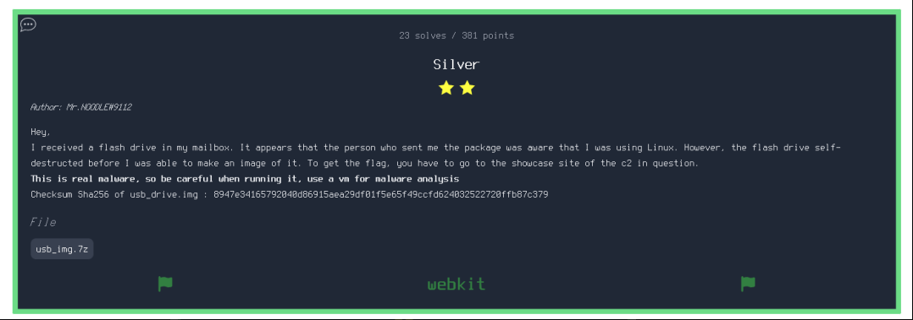
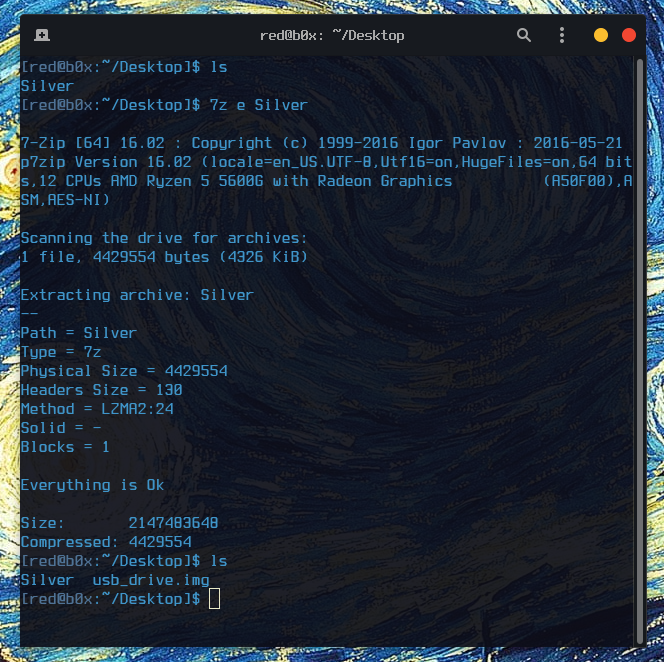
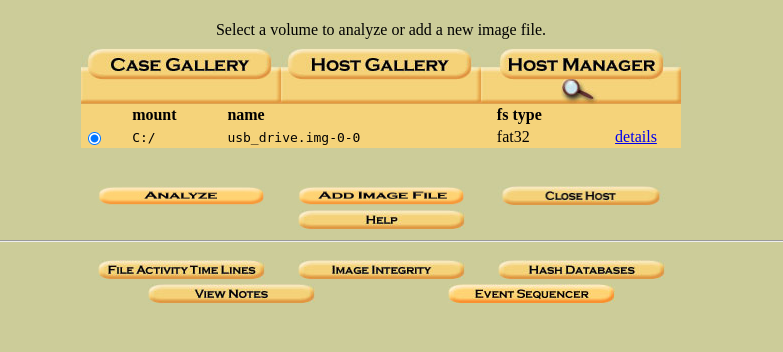
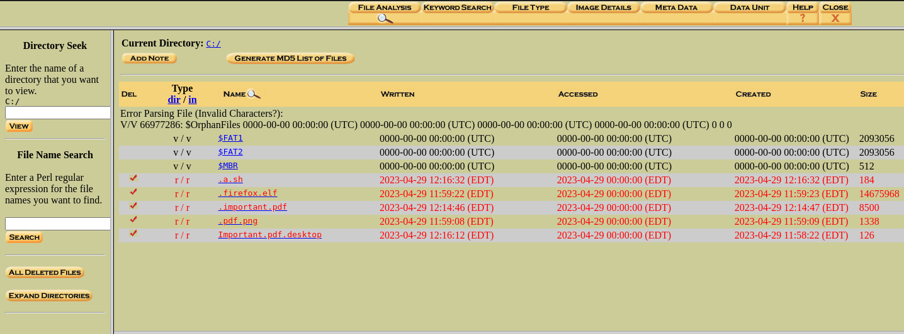
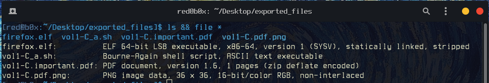
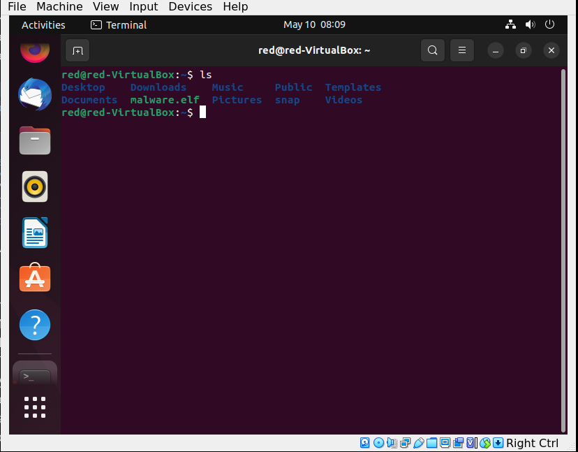
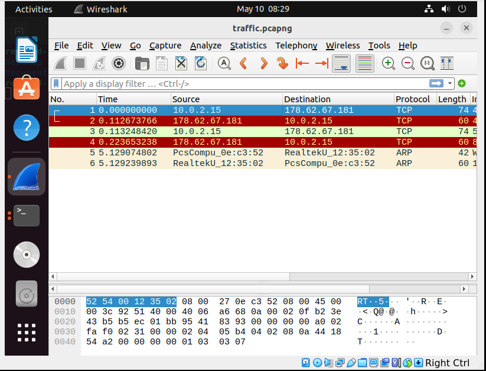
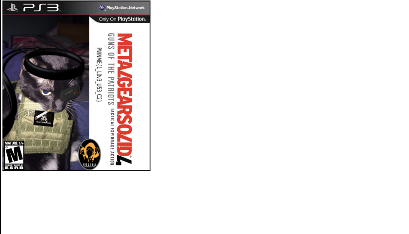

PWNME CTF Qualifications - Silver [Forensics] Write-up

| Difficulty | Medium |
|---|---|
| Category | Forensics |
First things first, lets download the challenge files and extract them if neccesarry. Once that is done with we will see one important file that we are gonna be working with, which is usb_drive.img.

Okay great ! We can now proceed further and examine what we are really working with. Lets see what type of file we just extracted is.
$ file usb_drive.img
usb_drive.img: DOS/MBR boot sector
Now that the file type we are working with is known to us, we can surely say its a disk image with a FAT32 file system. The next step would be to do a read only mount of the disk on our own machine. Which can easily be done with Autopsy.

That’s exactly what we wanted to see ! Now its time to go further down and see whats inside the file system.

NOTE –> Those files that we see that are highlighted with red are deleted files on the disk. Which also means they would be the most interesting to look at once recovered. So lets export them to a folder on our machine.
DOING ALL THIS WOULD BE BETTER IN A VM, THAT IS READY TO BE BROKEN. BECAUSE ONCE AGAIN WE ARE DEALING WITH REAL WORLD MALWARE.

This was the part that probably took me the longest to do, and im sure a lot of other teams got stuck on this part for awhile. I examied the .sh script and it wasnt doing anything interesting that could help us further down in the investigation. On top of that i did full Steganography Analysis on both , the PDF and PNG, yet i havent found anything. Finally there was one file left which was an ELF executable. It started with basic static analysis of the binary, for example checking strings and throwing it in Ghidra. Later i found out that the binary was written in GoLang and for me it would be pretty hard to Reverse Engineer it, so i decided to try running it inside a VM that is isolated from my host and internal network. Not only that but i also captured traffic on wireshark for potential network based indicators.
I ran this binary throught Virus Total and Hybrid Analysis and both of the vendors flagged it as malicious

Right after this i quickly downloaded Wireshark with sudo apt install wireshark and was ready to see whats inside this malware.

Lets see whats going on in those packets , we see that my host is trying to reach out to 178.62.67.181:443. But it was unsuccessful, instead how about we try to go to the website ourselves. Obviously safety is first so im gonna be using https://www.hidemyass.com/en-us/proxy to access that website.

WOAH ! Once we got to the website , we see an image at first my heart dropped because i thought there was gonna be more to it, but once looked at closely i found the flag !
PWNME{1_L0v3_U53_C2}
After all this challenge was definetely fun and enjoying in a way. I’ve learned to not overthink simplest things and hopefully that will stay with me for the future tournaments with my team.